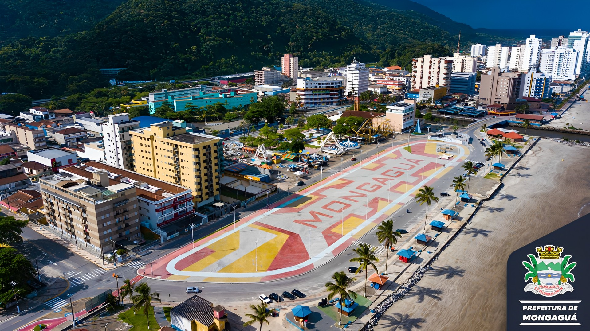
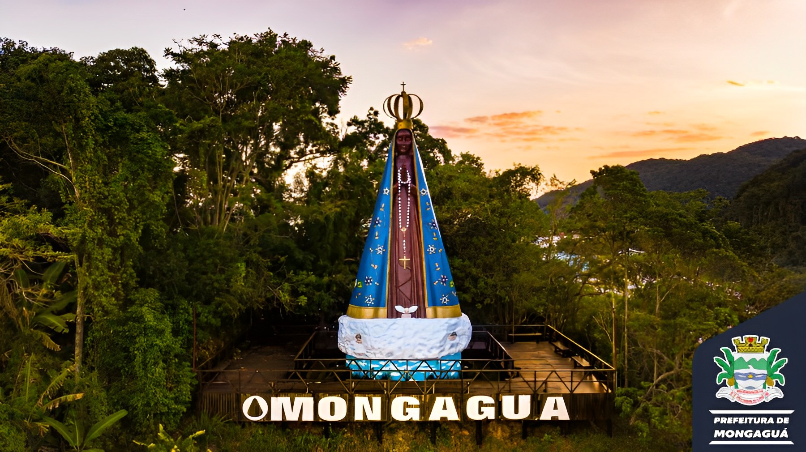

Com um clima agradável e ensolarado, Mongaguá é uma cidade predominantemente turística com uma população de cerca de 50 mil habitantes. A cidade está localizada na região litorânea do estado de São Paulo, Brasil, e possui cerca de 13 km de praias com águas limpas e boas condições para o banho, além de uma extensa área de preservação ambiental, o Parque Estadual da Serra do Mar.
Além das praias e áreas naturais, Mongaguá possui diversas atrações culturais, como a Casa da Cultura, que oferece exposições, workshops e eventos relacionados à arte e à história local. A cidade também possui um calendário de eventos anuais, que inclui festas, feiras e festivais, como a Festa de São João Batista, padroeiro da cidade, e a Feira de Artesanato, que reúne artesãos e artistas locais.
A cidade é bem servida de transportes, com uma estação de trem que conecta Mongaguá a outras cidades da região, e uma rodoviária com linhas de ônibus para diversas cidades do estado. Mongaguá é uma cidade tranquila e segura, com uma comunidade acolhedora e hospitaleira, que recebe turistas de braços abertos.
Mongaguá também é conhecida por sua gastronomia, com vários restaurantes que servem pratos típicos da região, como peixes e frutos do mar frescos. Além disso, a cidade possui um comércio diversificado, com lojas que vendem artesanatos, roupas, acessórios e produtos regionais.
Clique aqui para mais informações sobre o Centro da Cidade
Clique aqui para mais informações sobre a Plataforma de Pesca
Clique aqui para mais informações sobre o Poço das Antas
Clique aqui para mais informações sobre o Morro da Padroeira
 © Pedro Henrique - 2023